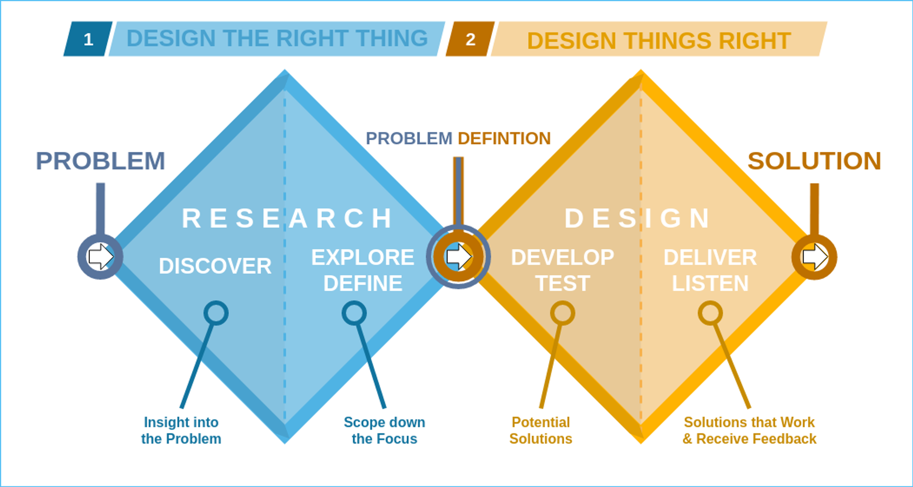
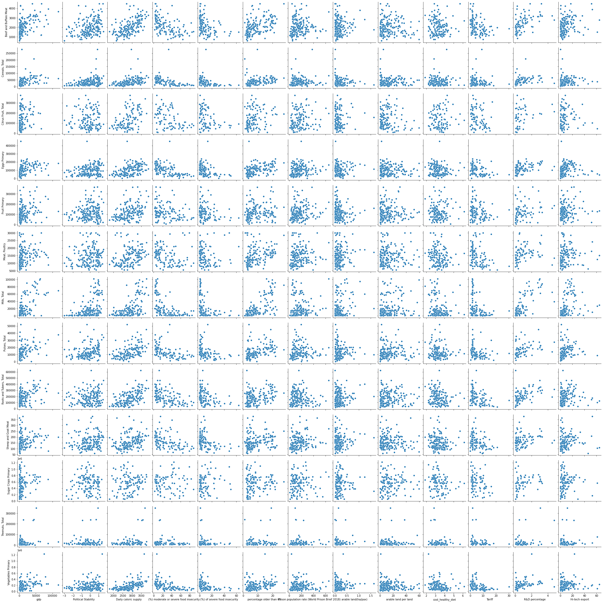
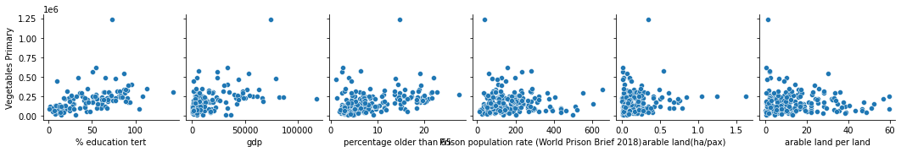
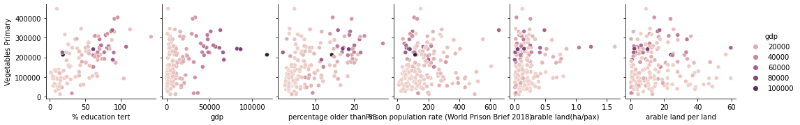
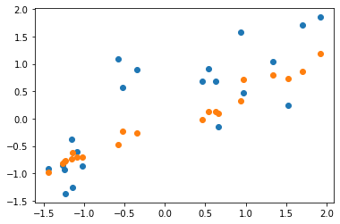
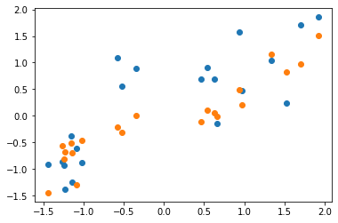
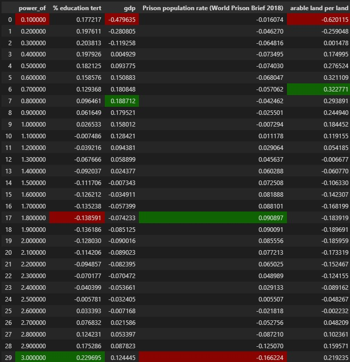
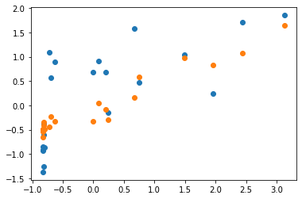
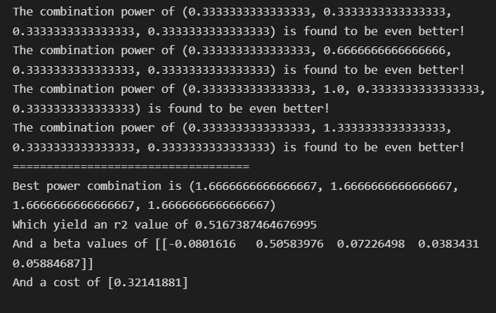

<link rel="stylesheet" href='style.css'>

<nav class="toc">
	<ul>
		<li><a href="#intro">Intro</a></li>
		<li><a href='#selection'>Selection of Data </a></li>
		<li>
			<a href="#cleaning">Data preperation</a>
		</li>
		<li>
			<a href="#modelling">Model Training</a>
		</li>
		<li>
			<a href="#evaluation">Iterations</a>
			<ul>
				<li><a href='#evaluation-1'>Iteration 2</a></li>
				<li><a href='#evaluation-2'>Iteration 3</a></li>
				<li><a href='#evaluation-3'>Iteration 4</a></li>
				<li><a href='#evaluation-excel'>Excel Comparison</a></li>
			</ul>
		</li>
		<li><a href="#conclusion">Conclusion</a></li>
		<li><a href="#credits">Credits</a></li>
	</ul>
  <svg class="toc-marker" width="200" height="200" xmlns="http://www.w3.org/2000/svg">
    <path stroke="#444" stroke-width="3" fill="transparent" stroke-dasharray="0, 0, 0, 1000" stroke-linecap="round" stroke-linejoin="round" transform="translate(-0.5, -0.5)" />
  </svg>
</nav>

<article class="contents">
  <section id ="intro">
	<h2><u> </u></h2>
	<p>United Nation and World Health Organization are forming a common taskforce together with
		industry leaders to address issues related Food Safety and Food Security. These organizations
		are looking into using data-driven modelling in order to help them solve some of the challenges
		in these areas. Our team has taken up the task to tackle a sector of food security, in order to mitigate the larger issue at hand.</p>
	<p>For our project, we have defined food produced within one’s borders to be truly secure while food imports, despite mitigation strategies like diversification, are insecure due to uncontrollable global events.</p>
	<p>Therefore our problem statement is as follows:</p>
	<p>How might we predict what type of development of a country affects its food security?</p> 

	<h3>Defining Key Terms</h3> 
	<p>
		<b>Development</b> can be categorised into two areas: economic and structural. Thus, we have chosen indicators that will reflect them.

			Food security is defined as everybody in the population having access to sufficient, safe and nutritious food.

			Food safety refers to handling, preparation, and storage of food in ways that prevent food-borne illness.
	</p>

	<h3>Social Concern:</h3> 

	<p>A social concern that we have identified is the issue of food security in the case of a black swan supply shock. We chose it because of how recent events have highlighted the fragility of global food transportation networks. These events include our experiences during Covid, where there was serious concern about food availability, the Evergreen incident in the Suez Canal which impacted global shipping, as well as Malaysia's chicken ban. These external factors are out of the control of nations, yet they have a great impact on food security. Thus, we concluded that food produced within one’s borders is truly secure while food imports, despite mitigation strategies like diversification, are insecure due to uncontrollable global events. Therefore, in determining food security and safety of a nation, we are focusing on each nation’s domestic food production yield.

	</p>

	<h3>HASS concept chosen:</h3>
	<p>
		Positivists believe society shapes the individual and use *quantitative* methods, intepretivists believe individuals shape society and use *qualitative* methods. 

We chose the concept of positivism versus interpretivism because it helps the UN to determine the approach (i.e quantitative or qualitative) that it should take to resolve the issue. The link between the indicators and HASS concept will be explained in the next paragraph.
	</p>


	</section>
	<br>
	

	<section id="selection">
		<h2><u>Selection of data</u></h2>
		<p>We have utilised the Double Diamond framework in our project in order to help us strcuture and guide our process. </p>
		
		<p>The first step (<b>disover</b>) for us was to think of and research for as many relevant food and country features as we could get with sufficient data, within our chosen restrictions, such as the time frame.</p>
		<p>We tested factors that could reflect the productivity of different economics, Y axis datasets, as well as factors that reflect the development of an economy, X axis datasets. Using seaborn we plotted these datasets against each other to perform a preliminary analysis and identify potential correlationships.</p>
		
		<p>Upon analysis and further discussion, we decided upon the following datasets:</p> 
		<h3>X axis datasets:</h3>
	
		<p>
			<b>GDP</b>: GDP is a good estimate of the wealth of a country and a wealthier country will have more resources to invest into food production, vice versa.<br><br>

			<b>Education (share of the population with tertiary education):</b> Education increases access to knowledge and changes mindsets, which can affect the way food is produced.<br><br>

			<b>Prison population per 10,000 people</b>: The higher the incarceration rate, the smaller the productive workforce.<br><br>

			<b>Arable land per total land</b>: The more arable land, the more resources for food production.
		</p>
		<h3>Y axis datasets:</h3>
		<p>
			<b>Food production yield (efficiency of food production)</b>: <br><br>
			- Food produced within one’s borders is truly secure while food imports, despite mitigation strategies like diversification, are insecure due to uncontrollable global events<br><br>
			- Also, a food production yield reflects on a nation’s ability to store and handle food products safely for the production of food to be counted in the data.
		</p>
		<br><br>
		<p>
			With our dataset defined, we are now able to begin perparing them for model training.
		</p>
	</section>

	<section id="cleaning">
		<h2><u>Data preperation</u></h2>
		<p>In this next part, we have narrowed our scope (<b>define</b>) down to purely efficiency of domestic vegetable production within the country. </p>
		<p>In order to illustrate how we prepared the data, we have plotted the various features against efficiency of vegetable production.</p>
		<p>This is how the image looked at first:</p>
		
		<br>
		<p>The first thing we did was to remove any outliers from the datasets. In order to do that, we created a function that would discard any values that are outside the preset standard deviation from the mean value.
			We used the normalize_z function in order to create a function to discard datapoints that lie outside the threshold standard deviation from the mean.
		</p>
		<br>
		
		<p>
			With the outliers removed, we are ready to prepare the values for modelling. We used the prepare_feature and prepare_target functions in order to ensure that they are ready to be passed on to the gradient descent function previously used in the cohort and homework assignments.
		</p>
	</section>

	<section id="modelling">
		<h2><u>Model Training</u></h2>
		<p>In the next part we have further processed our data (<b>develop</b>) in order to analyse and make meaningful conclusions.</p>
		<p>When building our model, we used linear regression as we are plotting how various factors would affect the efficiency of an economy, a linear regression would fit our needs better as we are trying to plot the relationship and not categorize.</p>
		
		<p>
			We made use of gradient descent in order to go through multiple iterations and approach the true beta values while minimizing the cost.
		</p>
		<h3>Evaluating the models</h3>
		<p>
			We created a function which would use the predict and r2_score functions in order to evaluate our models. The function would also plot a scatter plot of the target values and the predictions for ease of visualisation.
		</p>

		<h3>Combining the functions</h3>
		<p>
			We combined this function into a overall function that would take in the target values and features, as well as the multipliers, in order to create the model and evaluate the model created. We then plotted the data under the assumption that the relationship of each feature is linear and got the following results:
		</p> 
		<p>R2 is 0.5167387464676995<br>
			Final cost is [0.33295872]</p>

		
		<p>Although we succesfully designed a model, we believe there is room for improvement.</p> 
	</section>


	<section>
		<div id="evaluation">
			<h2>Iterations</h2>
			<p>We then performed multiple iterations as we felt that we could increase our R2 value, and also decrease the final cost function.<br><br>
			</p>
		</div> 

		<div id="evaluation-1">
			<h3>Iteration 2</h3> 
			<p>
				Perhaps we can't assume that the relationship of each feature with the target is linear. With so, we will add multipliers. Now, the feature dataframe will have powers of 0.1, 0.2, all the way until 3.0. <br><br>

				This will cause overfitting, but it will just to find the appropiate multipliers. 

				Using this method, we managed to achieve the following graph:
			</p>

			<p>R2 is 0.5582015491657406<br>
				Final cost is [0.28186389]</p>
	
			
			<p>
				That looks much better. The R2 value is around 20% higher, and the final cost is around 10% lower.
			</p>
		</div>

		
		<div id="evaluation-2">
			<h3>Iteration 3</h3> 
			<p>
				Now, we just need to find which powers to use by for each features. We can do this by looking at the most significant beta values. We created a function to visualize the most significant power for each feature:
			</p>
			
			<p>
				From here, we trained a new model with the following powers:			<br><br>

				-Power of 3.0 for tertiary education rate <br><br>
			
				-Power of 0.8 for gdp <br><br>
			
				-Power of 3.0 for prison population rate <br><br>
			
				-Power of 0.1 for arable land <br><br>
			</p>
			<p>R2 is 0.4301222762442557<br>
				Final cost is [0.36178534]</p>
			
			<p>There is a new problem now:

				Our new R2 and final cost values is worse than the original linear assumption. (Previously, R2 was 0.5167387464676995, and Final cost was 0.33295872). Our new R2 value is 0.08 lower, and the cost is 0.3 higher. </p>
		</div>

		<div id="evaluation-3">
			<h3>Iteration 4</h3> 
			<p>
				We decide to do a bruteforce method to find the optimal powers for each features. The method would test each combination of power and return the value with the lowest cost possible.
			</p>
			
			<p>R2 is 0.5167387464676995<br>
				Final cost is [0.32141881]</p>
			<p>Comparing the values, R2 is almost the same, while the final cost is 0.01 lower than the initial linear model.</p>
		</div>

		<div id="evaluation-excel">
			<h3>Excel</h3> 
			<p>
				On the Excel side (for Modelling Uncertainty), we have conducted the same models of multiple linear regression with the differing necessary data processing. We have evaluated our trained data sets for the various features using Mean Square Error and concluded that, similarly to DDW, our indvidual model for Education yields the best metric value. 
			</p>
		</div>
	</section>

	<section id="conclusion">
		<h2>Conclusions and key takeaways</h2>
		<p>The beta values of the final results are 0.505, 0.072, 0.038, 0.059 for education, gdp, prison population and arable land respectively. This high beta value for education suggests that it would be the greatest factor in affecting a country's efficiency. </p>
		<p>After all this processing, we are able to determine the necessary features that would help the issue at hand (<b>deliver</b>)
				
			This model is beneficial to the UN and WHO to understand that in order to increase efficiency of domestic production of vegetables, they should invest more in relevant tertiary education and focus on raising the GDP of the country as it is the most correlated feature related to the issue. This also means that they can have a more thought out timebox of their developmental plans to reach a targeted level of efficiency of production because the level of education and GDP can be used as a metric for their progress.
		</p>
	
	</section>

	<section id="credits">
		<h2>Credits</h2>
		<p>
			Data retrieved from <a style='color:#0000ff'href="https://databank.worldbank.org/reports.aspx?source=2&series=GB.XPD.RSDV.GD.ZS&country=#", target="_blank">databank worldbank</a>: <br>
			-Political stability <br>
			-Food insecurity <br>
			-GDP per capita <br>
			-% of population older than 65<br>
			-Arable land <br>
			-Arable land per land <br>
			-Percentage spent on reseaerch
		</p>
		<p>
			Data retrieved from <a style='color:#0000ff'href="https://ourworldindata.org/grapher", target="_blank">databank worldbank</a>: <br>
			-Tariff Rate <br>
			-Prison population rate <br>
			-Healthy diet price<br>
			-Tertiary education
		</p>
		<p>Efficiency of production retrieved from <a href="https://www.fao.org/faostat/en/#data/QCL">FAO</a></p>
		<p>
		Code template by Hakim El Hattab | <a href="http://hakim.se" target="_top">hakim.se</a> | <a href="https://twitter.com/hakimel" target="_top">@hakimel</a> 
		</p>	  
	</section>

</article>

<script src="default.js"></script>
